Pictures
The photographs, drawings, documents and maps from the 1982 edition. Each one links to its place in the text.
Chapter 1: A Raid on Dieppe
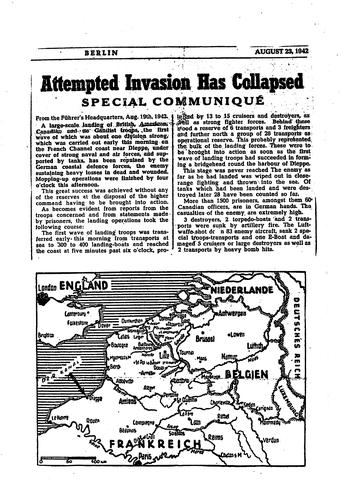
German communiqué on the Dieppe raid, from The Camp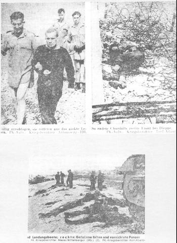
German press photos of the Dieppe beach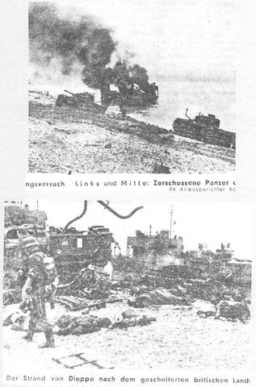
Wrecked landing craft and tanks on the beach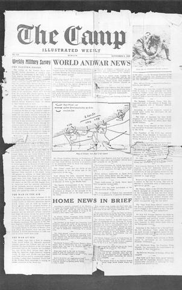
Front page of The Camp with a map of the raid
Chapter 2: Limping Towards Germany
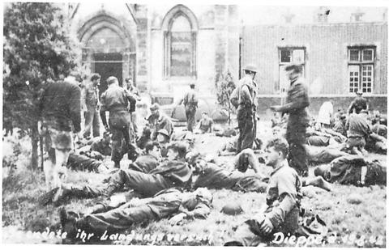
Wounded prisoners outside the Dieppe hospital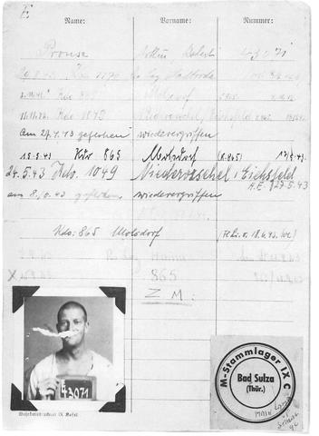
The author’s POW record card, No. 43071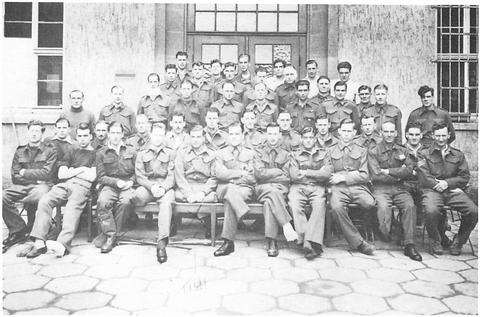
British amputees at the Stadtroda hospital
Chapter 3: Niederorschel Work Kommando 1049
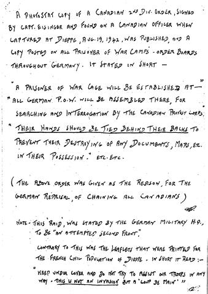
Wartime log page: the order to tie prisoners’ hands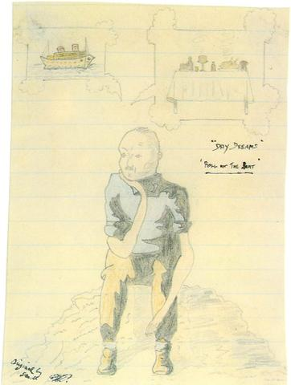
‘Day Dreams’ drawing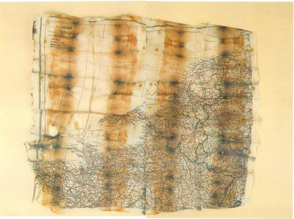
Rice-paper escape map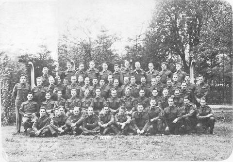
Plywood factory workers at Niederorschel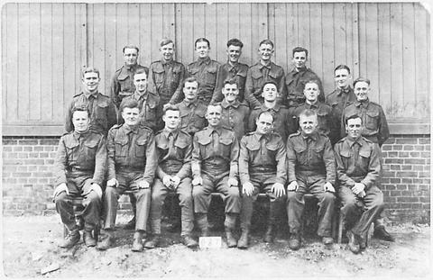
British prisoners of Work Kommando 1015, 1941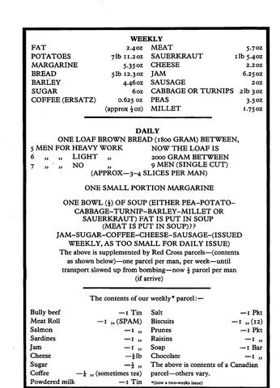
Weekly and daily ration list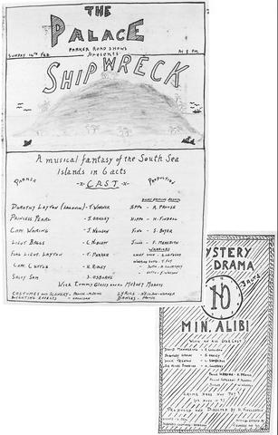
Programme for ‘Shipwreck’ and ‘10 Min. Alibi’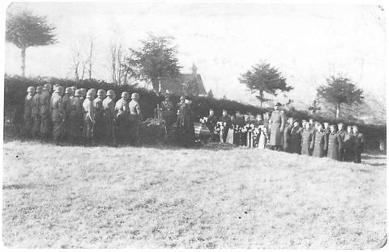
Funeral of the electrocuted corporal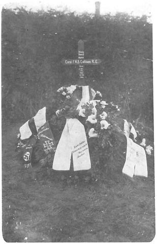
Grave with wreaths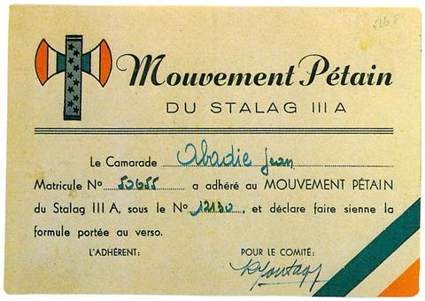
Mouvement Pétain membership card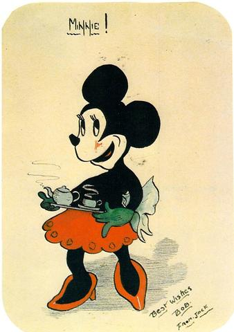
Minnie Mouse drawing
Chapter 4: The Escape of Janek Mrachek
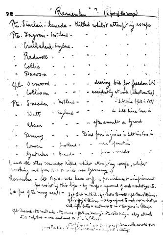
Wartime log page: ‘Remember’ (a few of the many)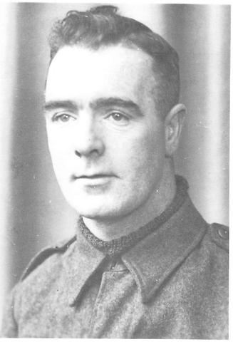
Sgt Tommy Glassey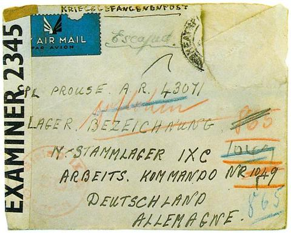
Letter marked ‘Escaped’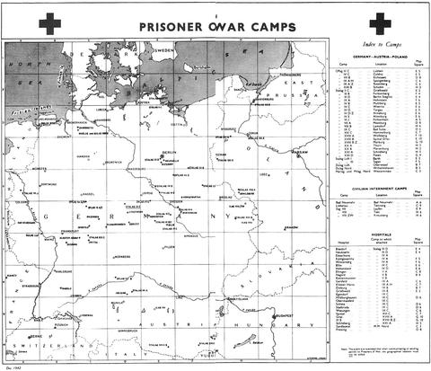
Red Cross map of POW camps
Chapter 5: If at First...
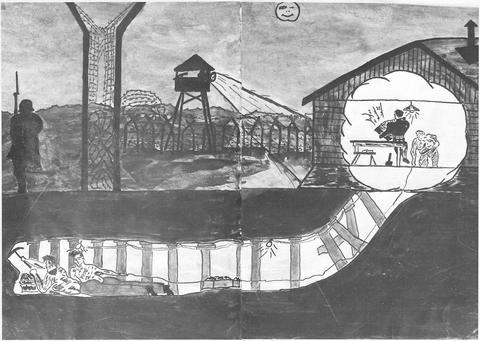
The Molsdorf tunnel escape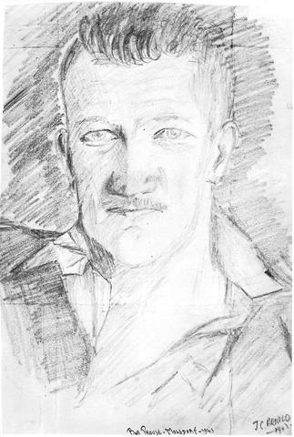
Portrait of the author by J.C. Arnold, Molsdorf 1943
Chapter 6: The Castle on the Hill
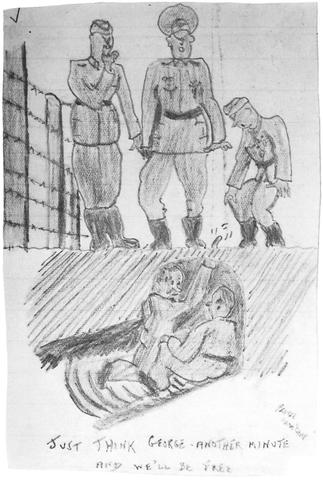
Cartoon: ‘Just think George — another minute and we’ll be free’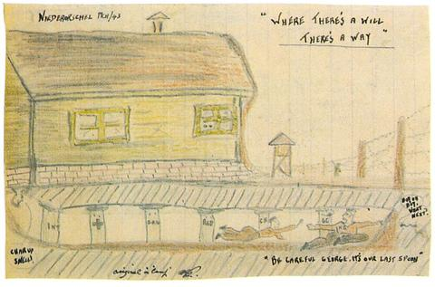
‘Where there’s a will there’s a way’: tunnelling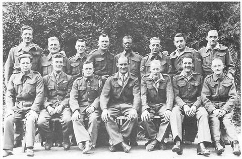
Workers at the hospital for the blind, Haina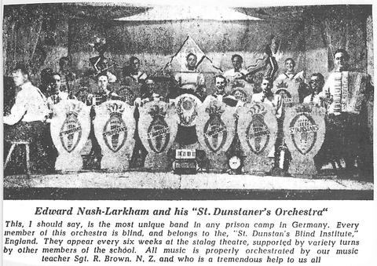
‘St. Dunstaner’s Orchestra’, Haina, from The Camp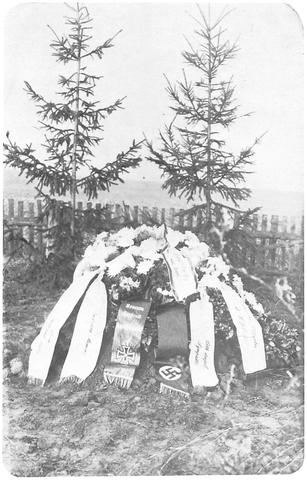
Grave of a salt-mine casualty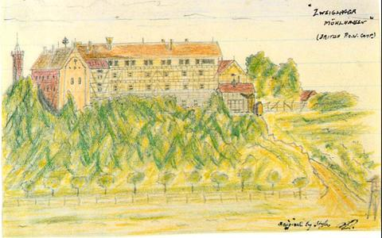
Mühlhausen, ‘the castle on the hill’
Chapter 7: Passing the Time
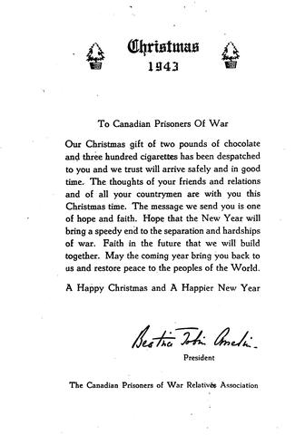
Christmas 1943 message to Canadian POWs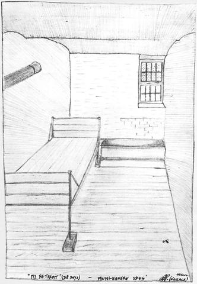
‘My Retreat (28 days)’: the dungeon cell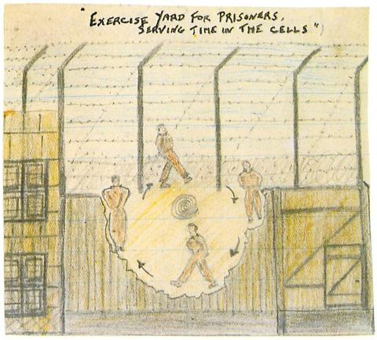
Exercise yard for prisoners serving time in the cells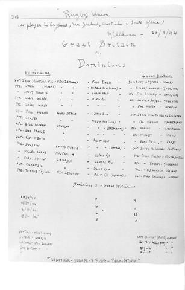
Rugby: Great Britain v. the Dominions, 1944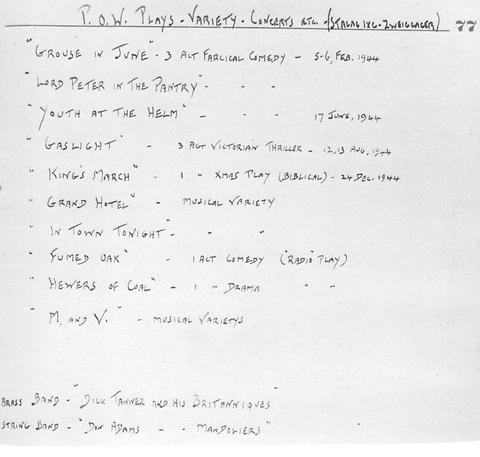
Log page: P.O.W. plays, variety and concerts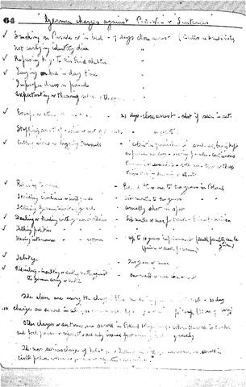
Wartime log: German charges and sentences against POWs (1 of 3)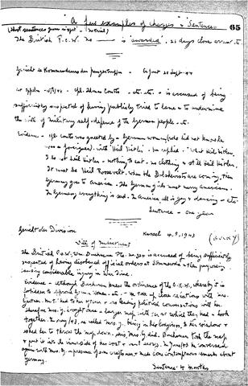
Wartime log: German charges and sentences against POWs (2 of 3)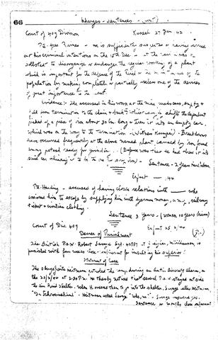
Wartime log: German charges and sentences against POWs (3 of 3)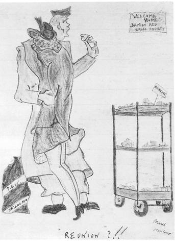
Cartoon: ‘Reunion?!!’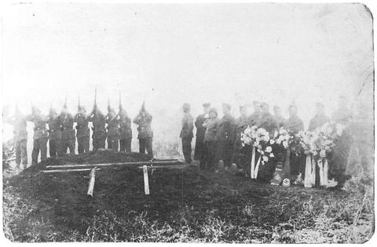
German honour guard firing a feu de joie
Chapter 8: The War Catches Up
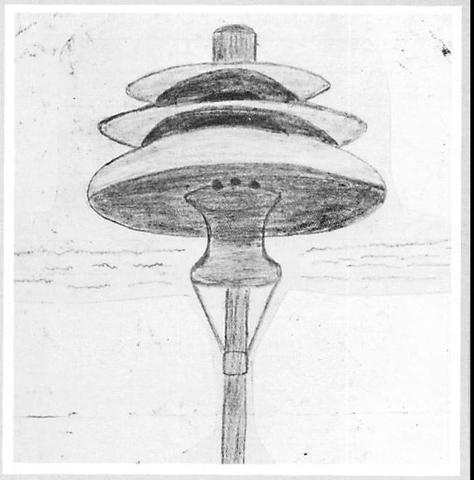
Air-raid siren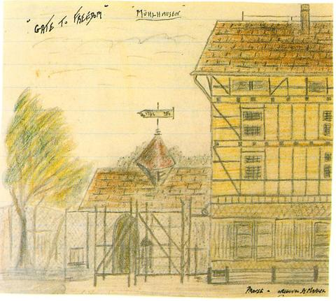
‘Gate to Freedom’, Mühlhausen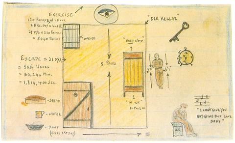
‘Der Keller’: a 21-day sentence in numbers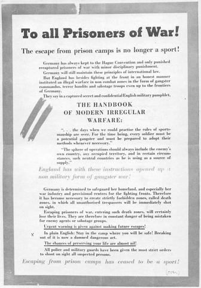
Poster: ‘To all Prisoners of War!’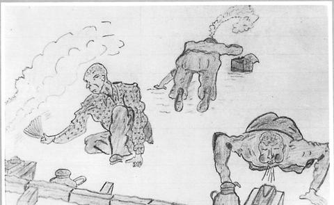
Cartoon: brewing up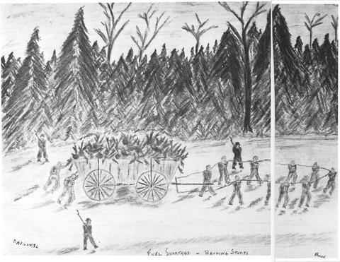
‘Fuel Shortage — Hauling Stumps’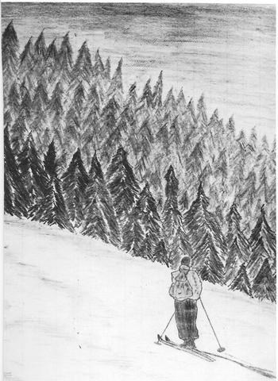
Skier in the woods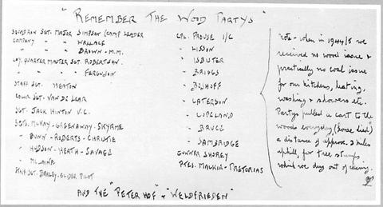
Log page: ‘Remember the Wood Partys’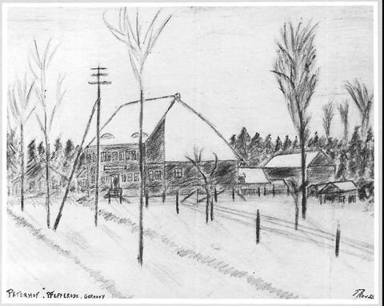
The Peterhof Gasthaus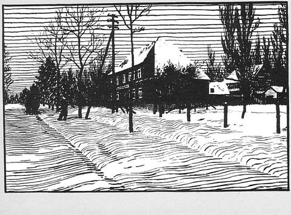
Peterhof, pen sketch by Padre Bamber- Cartoon: ‘War Finished?… Bah!’
Chapter 9: Forced March to Liberation
- Communal declaration by the Men of Confidence, Bad Sulza, 11 April 1945
- The first German officer to surrender to the author
- The first batch of German prisoners
- Snapshot taken from a German prisoner
- Snapshots taken from German prisoners
- ‘Liberated’ German ration coupons
- Souvenir snapshots from a gauleiter’s home (1 of 2)
- Souvenir snapshots from a gauleiter’s home (2 of 2)
- POW identity photos, ‘All Nations P.O.W.’ (1 of 2)
- POW identity photos, ‘All Nations P.O.W.’ (2 of 2)